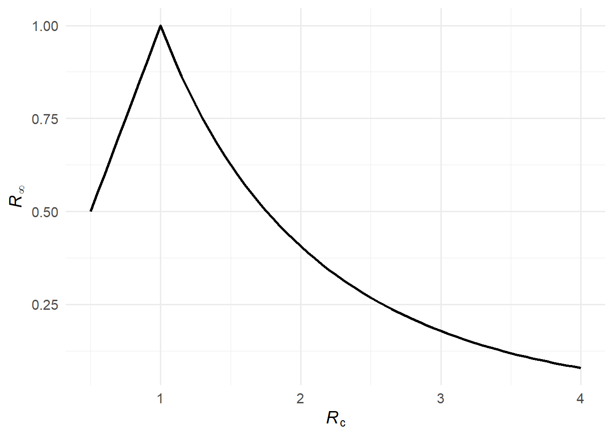
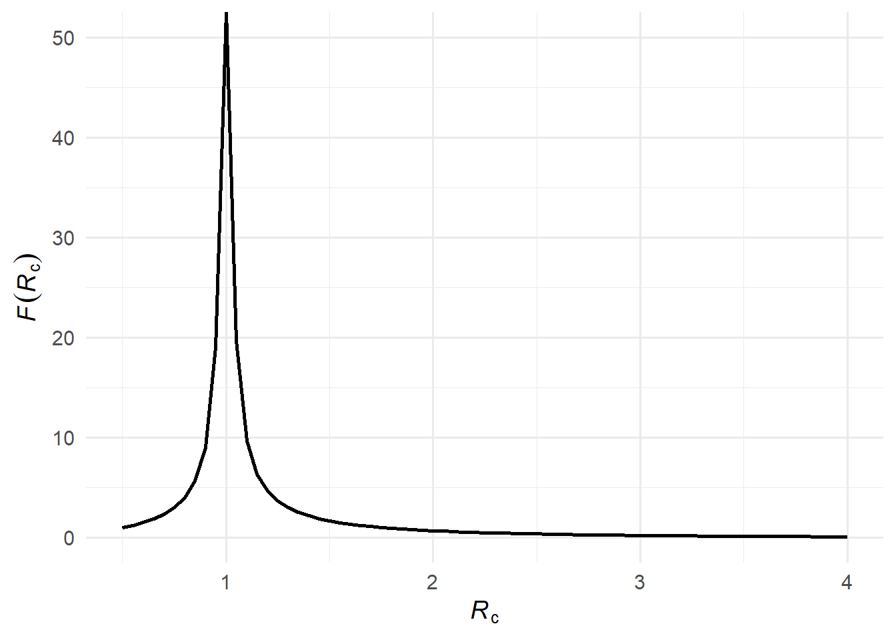
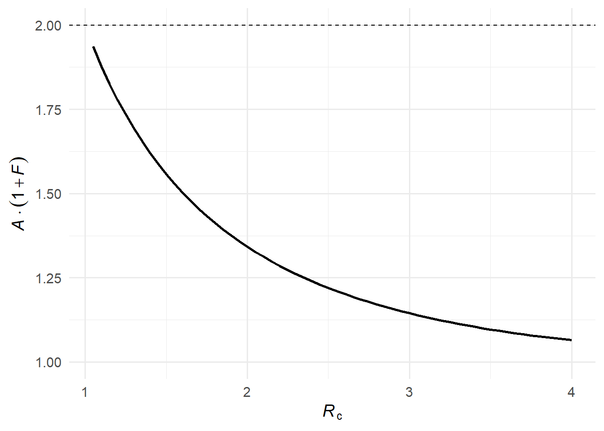
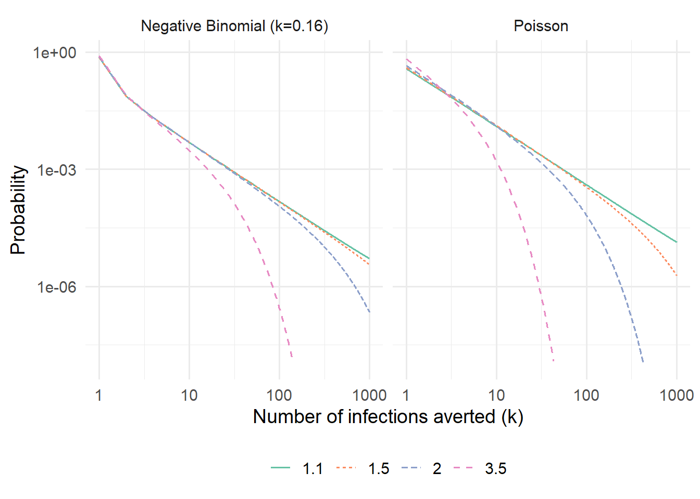

When a newly infected person successfully isolates, how many downstream infections does that prevent? The answer depends on the structure of transmission — not just the average reproduction number \(\mathcal{R}_c\) (denoting a reproduction number under control), but also on how heterogeneous transmission is, and critically, on how many other infected individuals are circulating at the same time.
1 Setting up the problem
Consider a large, well-mixed susceptible population. Each infected individual generates a random number of secondary infections drawn from an offspring distribution with probability mass function \(p_k = \Pr(K = k)\) and mean \(\mathcal{R}_c\). We consider two canonical choices: Poisson and negative binomial. Both share the same mean \(\mathcal{R}_c\), but the negative binomial has an additional dispersion parameter \(\kappa = 0.16\), meaning a small fraction of individuals cause a disproportionately large fraction of transmissions (superspreading).
We make use of the probability generating function (PGF) of the offspring distribution: \[
\mu(x) = \sum_{k=0}^{\infty} p_k x^k,
\] with \(\mathcal{R}_c = \mu'(1)\).
2 The final size of the epidemic
In a large well-mixed epidemic, the attack rate \(\mathcal{A}(\mathcal{R}_c)\) depends only on \(\mathcal{R}_c\), not on the shape of the offspring distribution (1). From any susceptible’s perspective, the total number of transmission attempts she receives is Poisson with mean \(\mathcal{R}_c \mathcal{A}\), regardless of how heterogeneous transmission is across infectors. She escapes only if she receives zero attempts, giving \[
\mathcal{A} = 1 - e^{-\mathcal{R}_c \, \mathcal{A}}.
\]
This transcendental equation can be solved iteratively from \(\mathcal{A}_0 = 1\).
An important consequence is that \(\mathcal{R}_\infty = (1-\mathcal{A})\mathcal{R}_c < 1\) for all \(\mathcal{R}_c > 1\), which guarantees that the effective reproduction number at epidemic’s end is always subcritical. This ensures the geometric series for \(\mathcal{F}\) (below) always converges.
An alternative uses the PGF fixed-point \(q = \mu(q)\), whose non-trivial root \(q^*\) is the branching-process extinction probability — the probability that a single introduction leads to a minor outbreak that dies out on its own. The complement \(1-q^*\) is the probability of a major epidemic. For Poisson offspring, \(1-q^*\) satisfies the same equation as the SIR attack rate, so the two coincide. For the negative binomial with small \(\kappa\), however, strong superspreading means most chains die out quickly, so \(1-q^* < \mathcal{A}_{\text{SIR}}\): major epidemics are less likely, even though when one does occur it infects a comparable fraction of the population. Using \(1-q^*\) in place of \(\mathcal{A}\) therefore overstates the remaining susceptibles, pushing \((1-\mathcal{A})\mathcal{R}_c\) higher — and near \(\mathcal{R}_c = 1\) it can exceed 1, causing \(\mathcal{F}\) to diverge.
Figure 1: The attack rate \(\mathcal{A}(\mathcal{R}_c)\) as a function of \(\mathcal{R}_c\). The curve is identical for both offspring distributions — the attack rate depends only on \(\mathcal{R}_c\), not on the shape of the offspring distribution.
3 Expected infections averted: the residual offspring distribution
When individual \(u\) isolates immediately after becoming infected, she prevents all infections in her residual offspring — offspring who would not be reached through any alternative transmission chain.
Of \(u\)’s \(K\) potential offspring, a fraction \(\mathcal{A}(\mathcal{R}_c)\) would have been infected anyway via another chain (and all their descendants too). The remaining fraction \(1 - \mathcal{A}(\mathcal{R}_c)\) are truly residual. Therefore the expected number of infections averted by isolating \(u\) is \[
\mathcal{R}_\infty = \bigl[1 - \mathcal{A}(\mathcal{R}_c)\bigr] \, \mathcal{R}_c,
\] which (1) show equals the effective reproduction number at the end of the epidemic — the initial reproduction number scaled down by the fraction of the population still susceptible when the epidemic burns out.

Figure 2: The effective reproduction number at the end of the epidemic, \(\mathcal{R}_\infty\).
Now consider all descendants, not just direct offspring. The expected number of infections averted at generation \(g\) is \(\mathcal{R}_\infty^g\). Summing over all generations gives a geometric series: \[
\mathcal{F}(\mathcal{R}_c) = \sum_{g=1}^{\infty} \mathcal{R}_\infty^g = \frac{\mathcal{R}_\infty}{1 - \mathcal{R}_\infty}.
\]
Each successive generation is \(\mathcal{R}_\infty\) times the size of the previous one; \(\mathcal{F}(\mathcal{R}_c)\) sums this over all generations.

Figure 3: The expected number of infections averted \(\mathcal{F}(\mathcal{R}_c)\).
4 Overdetermination limits the benefit at high \(\mathcal{R}_c\)
Overdetermination occurs when a susceptible individual has more than one sufficient cause of infection — meaning she would have been infected even if one of the transmission chains leading to her had been broken. In a high-transmission setting, most susceptibles are reached by multiple independent chains. Removing one chain — by isolating one infected individual — therefore has no effect on the eventual fate of many of those susceptibles. In other words, one’s descendants are overdetermined except for one’s residual descendants.
Formally, this is reflected in \(\mathcal{R}_\infty\) becoming small when \(\mathcal{R}_c\) is large: a large epidemic infects almost everyone (\(\mathcal{A} \approx 1\)), leaving few susceptibles at the end, so \(\mathcal{R}_\infty = (1 - \mathcal{A})\mathcal{R}_c \approx 0\) and \(\mathcal{F}(\mathcal{R}_c) \approx 0\).
5 The benefit is greatest near the epidemic threshold
When \(\mathcal{R}_c\) is only slightly above 1, a large epidemic is still possible, but many potential transmission chains die out on their own. A small reduction in transmission — like a single person isolating — can tip a borderline chain from an expanding outbreak to extinction. Formally, as \(\mathcal{R}_c \to 1^+\), we have \(\mathcal{A} \to 0\) and \(\mathcal{R}_\infty \to \mathcal{R}_c\), so \(\mathcal{F}(\mathcal{R}_c) \to \mathcal{R}_c / (1 - \mathcal{R}_c) \to \infty\). A careful limiting argument using L’Hôpital’s rule shows that the expected infections averted multiplied by the probability of the epidemic, \(\mathcal{A}(\mathcal{R}_c)[1 + \mathcal{F}(\mathcal{R}_c)]\), approaches 2 as \(\mathcal{R}_c \to 1^+\)(1).

Figure 4: The expected benefit multiplied by epidemic probability, \(\mathcal{A}(\mathcal{R}_c)[1 + \mathcal{F}(\mathcal{R}_c)]\). The dashed line indicates the theoretical limit of 2 as \(\mathcal{R}_c \to 1^+\).
6 The full distribution: rare but large cascades
(1) also derive the full distribution of infections averted. The derivation rests on two ingredients.
Ingredient 1: the Galton-Watson total-progeny identity. The key result is \[
T(x) = x \cdot \mu\bigl(T(x)\bigr),
\] where \(T(x) = \sum_{t=0}^\infty \Pr(T=t)\,x^t\) is the PGF of the total cascade size \(T\). Here is the derivation.
Let \(T\) be the total number of individuals in the cascade (root plus all descendants). The root has \(K\) offspring, each seeding an independent sub-cascade of the same kind, so \[
T = 1 + T_1 + T_2 + \cdots + T_K,
\] where \(T_1, T_2, \ldots\) are i.i.d. copies of \(T\). Since \(x^T = x \cdot x^{T_1+\cdots+T_K}\), we have \(T(x) = E[x^T] = x \cdot E[x^{T_1+\cdots+T_K}]\). Conditioning on \(K = k\), the \(T_i\) are independent, so \[
E\bigl[x^{T_1+\cdots+T_k} \mid K = k\bigr] = \prod_{i=1}^{k} E[x^{T_i}] = \bigl[T(x)\bigr]^k.
\] Averaging over \(K\) using \(\mu(s) = \sum_{k=0}^\infty p_k s^k\) evaluated at \(s = T(x)\), \[
T(x) = x \cdot \sum_{k=0}^\infty p_k \bigl[T(x)\bigr]^k = x \cdot \mu\bigl(T(x)\bigr).
\]
Ingredient 2: the residual offspring distribution.
Among \(u\)’s \(K\) potential offspring, each is residual — not reachable through any alternative chain — independently with probability \(\mathcal{R}_\infty\). Call the surviving count \(K'\). Conditional on \(K = k\), we have \(K' \sim \text{Binomial}(k, \mathcal{R}_\infty)\), whose PGF follows from the binomial theorem: \[
E[s^{K'} \mid K = k] = \sum_{j=0}^{k} \binom{k}{j} \mathcal{R}_\infty^j (1-\mathcal{R}_\infty)^{k-j} s^j = \sum_{j=0}^{k} \binom{k}{j} (\mathcal{R}_\infty s)^j (1-\mathcal{R}_\infty)^{k-j} = \bigl[(1 - \mathcal{R}_\infty) + \mathcal{R}_\infty s\bigr]^k.
\] Averaging over the random \(K\) using the definition \(\mu(z) = E[z^K]\), with \(z = 1 - \mathcal{R}_\infty + \mathcal{R}_\infty s\): \[
\mu_{\text{res}}(s) = E[s^{K'}] = E\!\left[(1 - \mathcal{R}_\infty + \mathcal{R}_\infty s)^K\right] = \mu\!\bigl(1 - \mathcal{R}_\infty + \mathcal{R}_\infty\, s\bigr).
\]
Combining. The infections averted form a Galton-Watson tree with offspring PGF \(\mu_{\text{res}}\). Substituting into the total-progeny identity gives the PGF \(\Omega_\infty(x)\) of the number of infections averted: \[
\Omega_\infty(x) = x\,\mu\bigl[1 - \mathcal{R}_\infty + \mathcal{R}_\infty \Omega_\infty(x)\bigr],
\] solved iteratively from \(\Omega_0(x) = 1\). Note that \(\Omega_\infty\) and \(\mu\) are distinct objects: \(\mu(x)\) encodes the offspring of a single individual (a one-step distribution), while \(\Omega_\infty(x)\) encodes the size of an entire cascade.
Near \(\mathcal{R}_c = 1\), this distribution has a heavy tail: most isolations prevent zero or very few infections, but occasionally they cut off a large cascade. The large average \(\mathcal{F}(\mathcal{R}_c)\) near threshold is driven by these rare high-impact events, a direct consequence of superspreading in the negative-binomial case.
7 Computing the distribution via the Cauchy integral
The Taylor coefficients \(c_k = \Pr(\text{avert exactly } k \text{ infections})\) of \(\Omega_\infty\) have no closed form for a general offspring distribution, but the Cauchy integral formula extracts them from values of \(\Omega_\infty\) on the unit circle \(|x| = 1\): \[
c_k = \frac{1}{2\pi i} \oint_{|x|=1} \frac{\Omega_\infty(x)}{x^{k+1}} \, dx.
\] Parametrising by \(x = e^{i\theta}\) turns this into a Fourier coefficient, \[
c_k = \frac{1}{2\pi} \int_0^{2\pi} \Omega_\infty(e^{i\theta})\, e^{-ik\theta}\, d\theta,
\] so the entire probability mass function \(\{c_k\}\) is the discrete Fourier transform of \(\Omega_\infty\) sampled at \(N\) equally-spaced angles. The algorithm is:
Set \(z_j = e^{2\pi i j/N}\), \(j = 0, \ldots, N-1\).
Iterate \(\Omega_{g+1}(z_j) = z_j\,\mu\!\bigl[1 - \mathcal{R}_\infty + \mathcal{R}_\infty\,\Omega_g(z_j)\bigr]\) from \(\Omega_0 \equiv 1\) until convergence (guaranteed for all \(|z| \le 1\) when \(\mathcal{R}_\infty < 1\)).
# PGF of the offspring distribution, vectorised over complex xpgf_mu <-function(x, R0, kappa =Inf) {if (is.infinite(kappa)) {exp(R0 * (x -1)) # Poisson } else { (kappa / (kappa + R0 * (1- x)))^kappa # Negative binomial }}# Extract PMF of infections averted via the Cauchy integral / FFTinfections_averted_pmf <-function(R0, kappa =Inf, N =2^13,tol =1e-10, max_iter =1000) { A <-solve_attack_rate(R0)if (A ==0) {return(NULL) } R_inf <- (1- A) * R0# Uniformly-spaced points on the unit circle z <-exp(2i * pi *seq(0, N -1) / N)# Iterate until convergence Omega <-rep(1+0i, N)for (g inseq_len(max_iter)) { Omega_new <- z *pgf_mu(1- R_inf + R_inf * Omega, R0, kappa)if (max(Mod(Omega_new - Omega)) < tol) break Omega <- Omega_new }# Cauchy integral via FFT: c_k = (1/N) * Re[ FFT[Omega] ]_k c_k <-Re(fft(Omega)) / N c_k[c_k <0] <-0data.frame(k =seq_along(c_k) -1L, prob = c_k)}R0_vals <-c(1.1, 1.5, 2.0, 3.5)dist_params <-list(Poisson =Inf, `Negative Binomial (k=0.16)`=0.16)df_pmf <-do.call(rbind, lapply(names(dist_params), function(dname) { kap <- dist_params[[dname]]do.call(rbind, lapply(R0_vals, function(r) { pmf <-infections_averted_pmf(r, kap)if (is.null(pmf)) {return(NULL) } pmf$Distribution <- dname pmf$R0 <- r pmf }))}))ggplot( df_pmf |> dplyr::filter(k >=1, prob >1e-8, k <=1000),aes(x = k, y = prob, color =factor(R0), linetype =factor(R0))) +geom_line(linewidth =0.7) +facet_wrap(~Distribution) +scale_x_log10() +scale_y_log10() +labs(x ="Number of infections averted (k)",y ="Probability",color =expression(italic(R)[c]),linetype =expression(italic(R)[c]) ) +scale_color_brewer(palette ="Set2")

Figure 5: Distribution of the number of infections averted when one infected individual isolates, computed via the Cauchy integral method. Shown on a log–log scale to reveal the power-law tail near \(\mathcal{R}_c = 1\).
At \(\mathcal{R}_c = 1\) the distribution follows a power law \(c_k \sim k^{-3/2}\) for the Poisson case, visible as a straight line with slope \(-3/2\) on the log–log axes. The negative-binomial case has a heavier tail at the same \(\mathcal{R}_c\), reflecting the additional variance from superspreading: while both distributions share the same mean \(\mathcal{F}(\mathcal{R}_c)\), superspreading inflates the probability of both very small and very large cascades.
8 Key takeaways
Near the epidemic threshold (\(\mathcal{R}_c \approx 1\)), each isolation has the largest expected public-health benefit.
At high transmission (\(\mathcal{R}_c \gg 1\)), overdetermination greatly reduces the marginal benefit of a single isolation — many infections will occur through alternative chains regardless.
Collective compliance has synergistic effects: as more individuals isolate, the effective \(\mathcal{R}_c\) falls, overdetermination declines, and the per-isolator benefit rises.
The benefit of isolation is heterogeneous: most isolations prevent few infections, but rare events prevent large cascades — a point with important implications for how we communicate the value of individual public-health actions.
9 Reference
1.
Roberts D, Jamrozik E, Heriot GS, Slim AC, Selgelid MJ, Miller JC. Quantifying the impact of individual and collective compliance with infection control measures for ethical public health policy. Science Advances. 2023;9:eabn7153. doi:10.1126/sciadv.abn7153